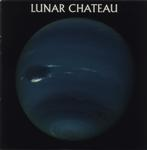

| Artist: | Lunar Chateau |
| Title: | Lunar Chateau |
| Label: | Muse FGBG 4117.AR |
| Length(s): | 58 minutes |
| Year(s) of release: | 1994 |
| Month of review: | [02/2001] |
| 1) | The Thrust | 3.14 |
| 2) | The Lunar Chateau | 5.02 |
| 3) | Brothers In Blood | 4.57 |
| 4) | The Eyes Of A Child | 4.17 |
| 5) | Ancestors | 5.25 |
| 6) | Transformer | 3.44 |
| 7) | Consequences | 6.21 |
| 8) | On Your Way | 6.20 |
| 9) | To Be Alive | 4.08 |
| 10) | Metropolis | 3.50 |
| 11) | Fearless | 2.45 |
| 12) | Aurora Borealis | 8.18 |
The melodic line is continued on the friendly sounding title track. Quick piano gives me the impression of lightheartedness and I'm reminded of someone like David Lanz. The not so strong vocals of the bass player Paul are also present on this track. In the higher regions he sometimes runs into trouble, but on the whole his voice is rather unobtrusive, something that can be said for the music as a whole. The piano intro returns later on and is really quite nice.
A symphonic darkish opening we hear on Brothers In Blood. A fantasy lyric about three brothers, hmm, where did I hear that before? The vocals are again somewhat unobtrusive, a bit in the style of most Alan Parsons vocalists. The song is built on a number of slow verses alternated with a more up-beat chorus.
The Eyes Of A Child continues the line of the album with romantic symphonic music, mostly built around the keyboards of Novak. The keyboards become piano again (or at least piano like) on Ancestors. It is striking that the music on this album is so quiet and subdued. The percussion is not even that sparse or anything.
Transformer has two vocalists, and again the main vocalist is not really at home in the higher regions. The vocalists do complement each other well on this rather optimistic track, which I am afraid has little much too offer. The keyboard part is really a bit too thin and the song lacks inspiration.
Hammered piano and drums open Consequences. The song consists of good melodic vocals and piano. A bit more power would have done a world of good here, but maybe that is for later. The instrumental interlude features some nice rolls on the drum, and then the music becomes positively playful.
At On Your Way the lack variation starts to wear me down. Because of the strong focus on composition, when the melodies are only a bit too weak, then the music becomes simply boring. This happens on this rather meandering track, which is also a tad too long.
To Be Alive has a poppy opening, and the singalong. optimistic chorus is maybe not very original or inspired, but it does have something. The verses are a bit too uneventful. Metropolis is something else again. Rather neurotic keyboards open this track. A track with dissonant keyboards and pleasantly active drumming against a backdrop of low bass playing. Quite a bit of ELP in here.
The band is really Fearless, because they include an active drum solo near the end of the album. Quite nice and fluent. The closer of the album is the longish Aurora Borealis. Nice tinkling piano and choral sounds from the keyboards. A nice track ending with subdued bass and keyboards.
Jurriaan Hage